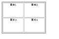
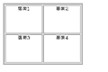

Abstruct
まずは、参考として、テーブルタグと同じ事なんかいくらでも出来るというということで、例を一つ出させて頂きます
見て頂きたいのはサンプル１のテーブル、これをHTMLで作成いたします
サンプル１
このテーブルのHTMLソースは、次の様な感じになりますよね
<table id="sample1">
<tr><td>要素１</td><td>要素２</td></tr>
<tr><td>要素３</td><td>要素４</td></tr>
</table>
で、設定したスタイルシートは下の様な感じ、基本的にはボーダーと、width、heightを指定して、見やすくしている感じですね
table {
border:solid 4px #aaa;
}
td {
border:solid 2px #aaa;
width:100px;
height:75px;
}
table {
border-spacing:2px;
}
td {
text-align:center;
vertical-align:top;
}
それではここからが本題なのですが、下の様なHTMLソースを書いたとして、ディスプレイでの表示はどのように行われるでしょうか？
<!-- クラスの名前に注目して下さい -->
<div class="table" id="sample2">
<div class="tr">
<div class="td">要素１</div>
<div class="td">要素２</div>
</div>
<div class="tr">
<div class="td">要素３</div>
<div class="td">要素４</div>
</div>
</div>
制作した例では、答えはサンプル２の様に表示されます
サンプル２
ほぼ同じ様な表示になっているのが分かっていただけるでしょうか？
今回の例で書いた、スタイルシートはこんな感じ。
div.table {
border:solid 4px #aaa;
}
div.td {
width:100px;
height:75px;
border:solid 2px #aaa;
}
div.table {
width:214px;
height:164px;
}
div.tr {
margin:1px;
clear:both;
}
div.td {
margin:1px;
float:left;
}
div.td {
text-align:center;
}
どのブラウザでも同じように映るように、結局汎用性のない方法を取ってしまいましたが、とりあえずスタイルシートでテーブルの代わりが出来るんだ、と実感していただくために擬似的にテーブルを作成してみました
width、heightでの指定箇所が多くて、正直、これはあまり実用的な方法ではないのですが
「無理にテーブルタグ使わなくても良いんじゃ無いか？」って思ってきませんでしたか？
今回はサンプル例、次回からは、実践編です。よく使われるデザインをスタイルシートで表していきましょう